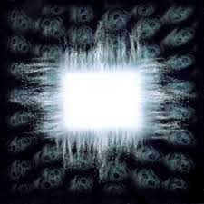
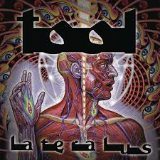

Ænima
1996Um colapso catártico e renascimento. Com "Stinkfist" e "Forty Six & 2", o álbum explora a teoria do psicólogo Carl Jung sobre a evolução humana através do confronto com a sombra.
Tool não é apenas uma banda — é uma experiência que transcende gêneros. Matemática, filosofia, psicodelia e peso se fundem em uma das obras mais desafiadoras e recompensadoras do rock moderno.
Formada em Los Angeles em 1990, a Tool é composta por Maynard James Keenan (vocais), Adam Jones (guitarra), Justin Chancellor (baixo) e Danny Carey (bateria). A banda redefiniu o que o rock progressivo pode ser, fundindo polirritmos matematicamente complexos com letras de profundidade filosófica.
Seus trabalhos exploram temas como espiritualidade, consciência expandida, geometria sagrada e a busca pelo autoconhecimento — frequentemente referenciando a sequência de Fibonacci, a proporção áurea e estruturas fractais em composições e visuais.
O nome Tool foi escolhido para provocar reflexão: a arte como ferramenta para expansão da consciência.
Cada álbum é uma jornada, esses três representam o highlight da banda.

Um colapso catártico e renascimento. Com "Stinkfist" e "Forty Six & 2", o álbum explora a teoria do psicólogo Carl Jung sobre a evolução humana através do confronto com a sombra.

Funde matemática e espiritualidade. A faixa-título utiliza a sequência de Fibonacci em suas estruturas lírica e rítmica para mimetizar a espiral da natureza. Lateralus busca a iluminação e a cura, indo além das limitações do ego.

Uma homenagem à mãe de Maynard, que viveu 10.000 dias em paralisia. "Wings for Marie" e "10,000 Days (Wings Pt 2)" são entre as composições mais emocionalmente devastadoras do metal progressivo.